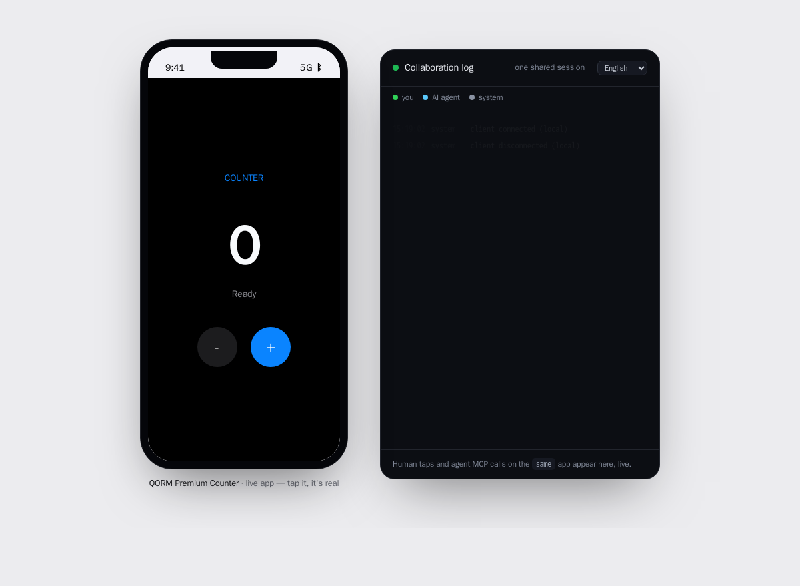
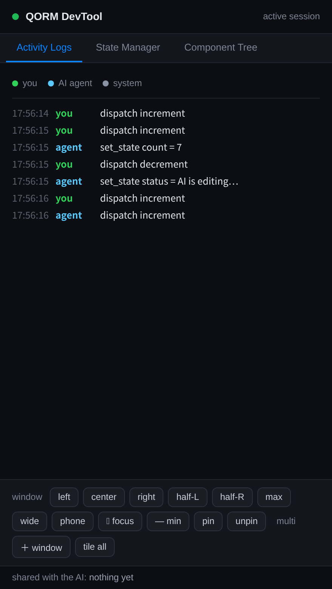

QORM MCP tools
Generated frominternal/mcp/tools.go(TestMCPDocInSync) — do not edit by hand. Regenerate withQORM_UPDATE_DOCS=1 go test ./internal/mcp/.
QORM exposes a Model Context Protocol server so an AI agent can read, operate, design, and verify a live QORM app. Start it with qorm mcp <app-dir|bundle> (stdio JSON-RPC), or reach the same tools over HTTP at /mcp on a running qorm run — the agent and the browser then share one live runtime.

The app a human runs, beside the shared session log the agent reads over MCP — one live runtime.
The DevTool lists your taps and the agent's MCP calls on the same app, oldest first, colour-coded by actor.Safety model. qorm_simulate_action, qorm_preview_patch and qorm_diff run against a copy and never touch the live app. qorm_apply_patch commits a change, but it must carry the previewToken returned by a matching qorm_preview_patch of the same ops — so every committed edit is bound to a prior review. qorm_undo reverts the last apply.
| Tool | Parameters | What it does | ||||||||||||||||
|---|---|---|---|---|---|---|---|---|---|---|---|---|---|---|---|---|---|---|
qorm_window | h (integer), id (string), js (string), op (move\ | open\ | close\ | eval\ | tile\ | focus\ | minimize\ | pin\ | unpin), url (string), w (integer), x (integer), y (integer) | Control the desktop app window: op=move needs x,y,w,h (top-left px); op=focus/minimize/pin/unpin act on the window. The control engine positions the user's window. Supported on macOS and Windows desktop apps. | ||||||||
qorm_inspect | — | Inspect the QORM app: id, name, entry scene, scene ids, state schema, current state, action ids, static compiler diagnostics, and the design-token system (designTokens: name -> {type,value,enforce}) when declared. Enforced color tokens hard-constrain apply_patch: a color style may only be set to one of their values. Read-only. | ||||||||||||||||
qorm_render_html | — | Render the current app to HTML so the agent can see what the UI looks like — the scene the session is actually on, after its route guard has been resolved (a guarded scene the session may not enter is never rendered). Read-only. | ||||||||||||||||
qorm_a11y_tree | — | Derive the accessibility tree for the entry scene: every node's ARIA role, accessible name and semantic state (checked/disabled/required/value), plus an audit of accessibility issues — interactive controls and images that would reach a screen reader with no accessible name. Use it to check a11y coverage or find what to fix. Read-only. | ||||||||||||||||
qorm_capabilities | — | List all built-in hardware/native capabilities: each capability's canonical name + widget type, the qormToNative op strings it accepts, its qormOn<Name> callback, and which platforms (ios/android/mac/linux/windows/web) implement it. Read-only — how an agent discovers what hardware exists and exactly how to call it. Mini-program is a static export target: no live tools apply. | ||||||||||||||||
qorm_get_node | id* (string) | Return a node's type, props, and child ids by node id. Read-only. | ||||||||||||||||
qorm_source_location | id* (string) | Reverse-lookup: given a node id (e.g. one a human clicked in the devtool or you found via qorm_query), return where it is declared in the app's source — file (relative to the app dir), 1-based line, and that line's text. Lets you jump straight to the JSON to edit it. Unavailable for a signed bundle (no source tree) or a templated id. Read-only. | ||||||||||||||||
qorm_query | hasProp (string), idContains (string), textContains (string), type (string) | Find nodes matching a selector (any of: type, textContains, idContains, hasProp — combined with AND). Returns each match's id, type, label and ancestor path. Use this to locate nodes before patching. Read-only. | ||||||||||||||||
qorm_list_actions | — | List available actions and a summary of each action's steps. Read-only. | ||||||||||||||||
qorm_activity | — | Read the shared session's live presence: returns {events:[who (human/agent) did what, oldest to newest], humanFocus:{element, secondsAgo}, humanTyping:{entry, secondsAgo}, humanFilled:{field, secondsAgo}, inflight:N} — so the agent sees what the human just did, the element they are on now, the text they last typed, AND which hidden (password) fields they filled (label only; a password value is never captured), and collaborates in context. inflight counts the background work the app still has open (async http.* requests plus waiting delay steps): 0 means the app has settled and what you read now is final, above 0 means a reply is still coming and the current frame is a loading state — read again before drawing conclusions. Only available in a running qorm run session. Read-only. | ||||||||||||||||
qorm_export_scene | — | Serialise the current (possibly patched) entry scene back to QORM JSON, so design work done via apply_patch can be saved or shipped. Read-only. | ||||||||||||||||
qorm_export_bundle | — | Serialise the whole current app (manifest + scenes + actions) into an UNSIGNED bundle (with content hash). A human/CI signs it (qorm sign) before OTA deploy — the agent never holds the signing key. Read-only. | ||||||||||||||||
qorm_simulate_action | action* (string), args (object) | Dispatch an action against a COPY of state and return before/after/changed. Side-effect-free: the live app is never modified. | ||||||||||||||||
qorm_dispatch | action* (string), args (object) | OPERATE the live app: dispatch an action (mutating state) and return the new state and rendered HTML. | ||||||||||||||||
qorm_set_state | path (string), value | OPERATE the live app: set a state path to a value and return the new state and rendered HTML. A dotted path NESTS, exactly like the state.set action step: path 'user.name' writes name inside user, so a binding {{ state.user.name }} reads it back. Computed (derived) values are read-only — a path inside the computed namespace is rejected, because they are republished from their declarations at every frame. | ||||||||||||||||
qorm_assert | checks* (array) | TEST the app: evaluate checks against current state and rendered HTML. Each check is {kind: 'stateEquals'\ | 'htmlContains'\ | 'nodeExists', ...}. Returns per-check pass/fail and overall. | ||||||||||||||
qorm_preview_patch | ops* (array) | DESIGN (safe): apply patch ops to a COPY of the app and return the resulting HTML plus a previewToken. Side-effect-free — the live app is unchanged. Ops: {op:'setProp',target,key,value} \ | {op:'addChild',target,node} \ | {op:'insertBefore'\ | 'insertAfter',target,node} \ | {op:'replace',target,node} \ | {op:'wrap',target,node} \ | {op:'move',target,into} \ | {op:'remove',target}. | |||||||||
qorm_diff | ops* (array) | DESIGN (safe): show the structural diff a patch would make (added/removed node ids and, per changed node, which fields) without touching the live app. Review before apply. | ||||||||||||||||
qorm_apply_patch | ops (array), previewToken (string) | DESIGN (commit): apply patch ops to the LIVE app. Must pass the previewToken returned by qorm_preview_patch for the same ops — apply is bound to a review. Snapshots the pre-image so it can be undone. If the app declares enforced color design tokens (see qorm_inspect designTokens), a setProp style op that sets a color style to a non-token value is rejected (also at preview time). | ||||||||||||||||
qorm_undo | — | DESIGN: revert the last applied patch, restoring the app to its state before that apply. Returns the reverted HTML and remaining undo depth. | ||||||||||||||||
qorm_measure | — | INTERPRET the LIVE render precisely: returns every component joining what the user expressed (type, text, state binding) with how it actually rendered — x,y,w,h, visible, and computed color/background/fontSize/fontWeight/padding/borderRadius/border/opacity/zIndex/position/x-overflow — as measured by the running app in its own window. Requires the app to be open in a window/browser (it self-measures on load and after every change). Use to see exactly how the user's app rendered. | ||||||||||||||||
qorm_check_layout | checks* (array), viewportH (integer), viewportW (integer) | VERIFY the LIVE render against expectations; returns per-check pass/fail with actual values. checks is an array of {id, <assertions>}. Assertions: visible(bool) \ | type(widget-type string) \ | text(substring the component must contain, matched vs expressed OR rendered text) \ | noOverflow(bool, no horizontal overflow) \ | minW\ | maxW\ | minH\ | maxH(px number) \ | x\ | y(px number, ±3 tolerance) \ | within(id: this box must sit inside that id's box) \ | below(id: must start below that id) \ | backgroundNot\ | colorNot(substring that must be ABSENT — e.g. "255, 255, 255" to assert not-white in dark mode) \ | role(the rendered ARIA role string, incl. roles the renderer injects) \ | hasAriaLabel(bool) \ | contrastRatio(min WCAG ratio, e.g. 4.5 for AA normal text — computed against the effective background). Example: [{"id":"wifi","type":"switchlisttile","visible":true,"within":"settings"},{"id":"chart","noOverflow":true}]. Fail-loud: an unrecognised assertion key (e.g. a typo) fails, and a within/below target id that was not measured fails as 'not found' — nothing silently passes. Requires the app open in a window (it self-measures). Optional viewportW/viewportH (px) set the runtime viewport before evaluating, so responsive when branches resolve as if the window were that size — note the measured rects still come from the client's REAL window (a live client also overwrites the viewport on its next load/resize). |
Parameters marked * are required; the rest are optional.